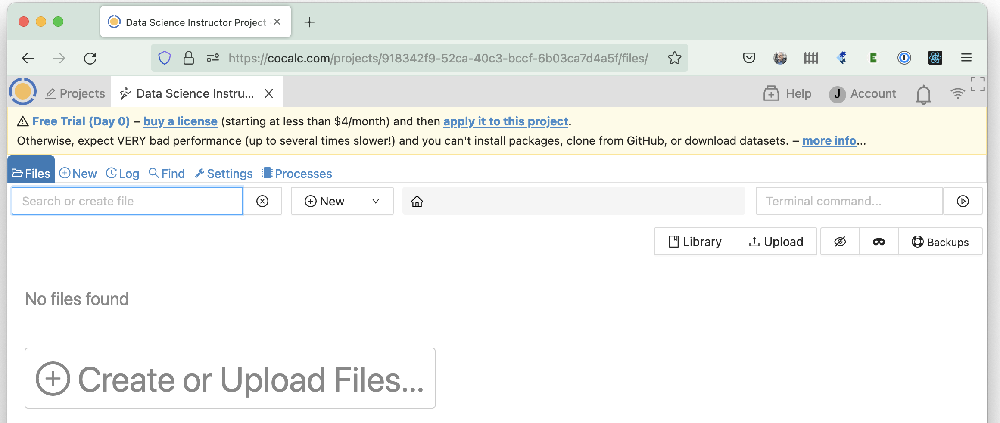
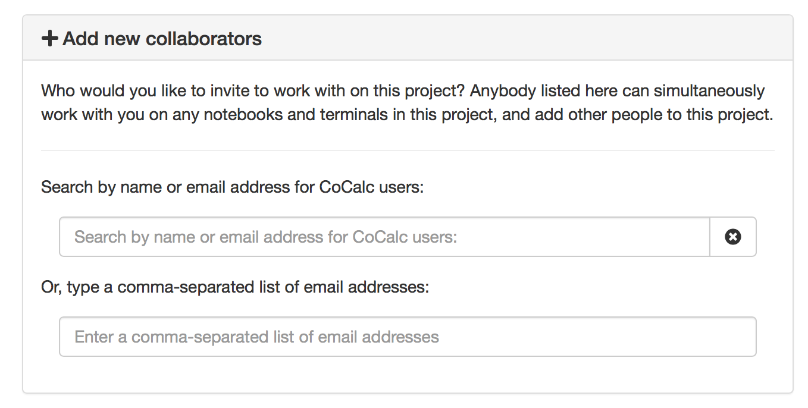

Creating a New Course
In this section we will learn how to create a course project, how to populate it with a course management file and how to invite all of your students to join the course.
Create the Teacher’s Project
The first step is to create a teacher’s project to contain the course.
Sign into CoCalc and click on Projects at upper left.

Click on Create New Project, fill in the Title, and click Create Project

The new project will be created. If the project is not automatically started, click the “Start Project” button to start it. You will see an empty Files list for the new project, because you haven’t added any files yet.
Note
When a new project is first opened, you will see a “Free Trial” banner above the Files toolbar, warning that no license has been applied. You can add a license later (see below) in one of two ways: 1) there is an option in course configuration to use the same license for the teacher’s project that is used for all the students; 2) you can decline that option and instead specify a different license in project Settings for the teacher’s project.
Add Teaching Assistants to the Teacher’s Project
To add teaching assistants or other teachers:
If it is not already open, open the course project.
Click Settings (wrench icon) and scroll down to “Add new collaborators” in the project settings.
Under “Add new collaborators”, you can find or add collaborators by name or email address. These collaborators will also have access to all associated student projects orchestrated by that project. Do not add students in the course as project collaborators!
If the email address you add as a collaborator is not associated with a CoCalc account, an email will be sent to that address with instructions how to join. Once the account with exactly that email address is created, that new user will be added automatically to all projects with pending invitations.
Create the Course File
Almost all aspects of a course, such as which students are enrolled and assignment management, are controlled by a course file.
In the project Files list (see image above), click “(+)New” in the upper toolbar, or click “(+)Create or Upload Files…” in the middle of the page.
You can override the default file name. Give the file a descriptive name like “Data Science 101”
Click on “Manage a Course” to create the course file. Note that this step merely appends the suffix “.course” to the filename.

A new file with the extension “.course” will be created in the home directory of the project. This is the course management file.
Note
You may have more than one course file in a single project, as is explained in the next section. Be aware that any teaching assistant you add to the project will have access to all course files and student work in that project.
Split course into multiple groups
Note: If your course is large, it is possible to partition your class into several groups or sections.
To accomplish that, simply create more than one course file.
For example, DS101_A.course, DS101_B.course, DS101_C.course, …
for groups A, B, C and so on.
These course files are independent of each other, which allows not only different groups of students, but also different due dates, etc.
Add Students to the Course
Open your new course by clicking on the course file. Select the “Students” tab if it is not already shown. You will see a box at upper right where you can add students and search for them in CoCalc.

It’s best to add students using their email addresses, because those are unique for cocalc accounts. However, it is also possible to search for students by first and last names.
To add multiple students, you can paste in a comma-separated list of email addresses or names. Another way to enter the information is if you have your students’ email addresses in a column of a spreadsheet, for example with Excel or Google Sheets.

You can copy the addresses from the spreadsheet and paste directly in the Add student box.

After running the search by clicking “Search” or hitting shift-Enter, you can select which students you want add from the search results (use Ctrl-click or Cmd-click for more than 1 student), or just click the “Add all students” button.

Next, the student projects will be created. Please be patient until all students are processed and do not close CoCalc. If the process appears stalled after creating some number of student projects, you can refresh your browser to check for updated results.

If your project (the one with the .course file) has network access (this is provided when any CoCalc license has been applied), any student who does not have an account on CoCalc will be sent an email invitation to create an account and join your course.
Note
For security reasons, CoCalc does not automatically send email invitations to students added if they already have a CoCalc account.
Email addresses that are followed by (invited) do not have a CoCalc account yet. (invited) will disappear as soon as they sign up.
You can see when each student last used the course project. In this case – never!
The ! Free warning next to each student shows that they are running this course on free servers. It is strongly recommended that you upgrade this to members-only servers for your students. You can also require in the configuration page that your students pay a small one-time fee to upgrade their projects (see below).
Note
Some email services, notably Hotmail and Yahoo Mail, may silently block emails sent from our service. In that case, an invitation to sign up will not appear in the inbox or spam folder of the intended recipient and another method must be used to communicate sign-up information to the student.
Reconfigure Student Projects
In the course Configuration tab on the right, click Reconfigure all projects to ensure student projects have correct students and teaching assistants, titles and descriptionsa. Doing so will also resend email invitations to students who have not already signed up for CoCalc.

“Reconfigure all projects” at lower right in course Configuration
Resend outstanding email invites
In the course Configuration tab on the right, click Reinvite students to send/resend an email invitation to all students who do not yet have an account on CoCalc. This will send at most one email per student per day.

“Reinvite students” at lower right in course Configuration
Restrict Student Projects
What do the Students Get?
On being invited to a course, each student will have a project created for them in their CoCalc account that corresponds to that course. Each project will have you and the course teaching assistants set as collaborators.
The student’s course project will have its own individual quotas set for disk storage, internet access and so on (e.g. students get 1GB of RAM). These quotas will be the standard set of quotas that everybody gets with free CoCalc projects.
You can learn more about upgrades and quotas in the next chapter or the Project Upgrades.

{kind=link}
{kind=link}